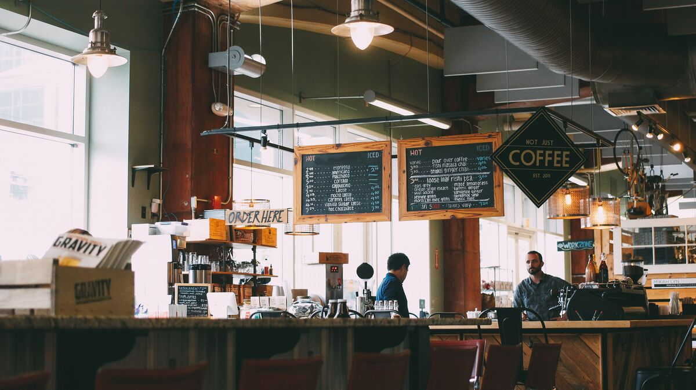

Hello, I'm Ruth
I roast the coffee at Furnace Hill and I write most of this journal. Dev Sandhu does almost everything else. He'd tell you that includes keeping me to the roast schedule.
Before coffee I taught chemistry at a secondary school in Hillsborough for twenty-four years. In 2013 a former student who had become a barista gave me a bag of Kenyan coffee that tasted of blackcurrant, and I couldn't work out how. I bought a stovetop popcorn pan, set off the smoke alarm in our kitchen in Walkley about forty times, and kept my notes in the same kind of lab book I used to hand out to Year 10.
By 2017 I had a one-kilo roaster in the garage and a stall at the Sharrow Vale market on the first Sunday of the month. In 2019 I left teaching and rented a unit in Ashberry Yard, off Mowbray Street. Our first roaster there was a five-kilo Turkish machine with a temperamental gas valve. In 2021 we bought a second-hand Probat P12 from a roastery in Leeds that was closing, and we still roast on it every week.
Dev joined in 2022 after three years running the bar at a café on Division Street. He packs the orders, runs the Saturday counter and looks after the cafés we supply. He is also the better taster of the two of us, which I've stopped arguing about.
What we roast
We roast once a week and keep five or six coffees on at a time. There's our house espresso, Neepsend, which is a Brazil and Colombia blend, a decaf, and three or four single origins that change with the harvests. We supply eleven cafés and a bakery in Sheffield and Chesterfield, and we post bags anywhere in the UK.
Most of our green coffee comes through two importers, one in Bristol and one in London. Since this autumn one coffee comes from a single farm in Colombia, and I wrote about how that happened and what it cost. We publish what we pay for a coffee whenever the people we buy from are happy for us to.
The counter
The unit is open on Saturdays from 9 until 1. You can buy bags, have a filter coffee for £2.50, and look at the roaster, which will be cold. If you'd like to see it running, come to the open roastery on the first Tuesday morning of each month. There's no need to book.

If you want to ask anything, or you run a café and want to try our coffee, the contact page has our email and phone number.